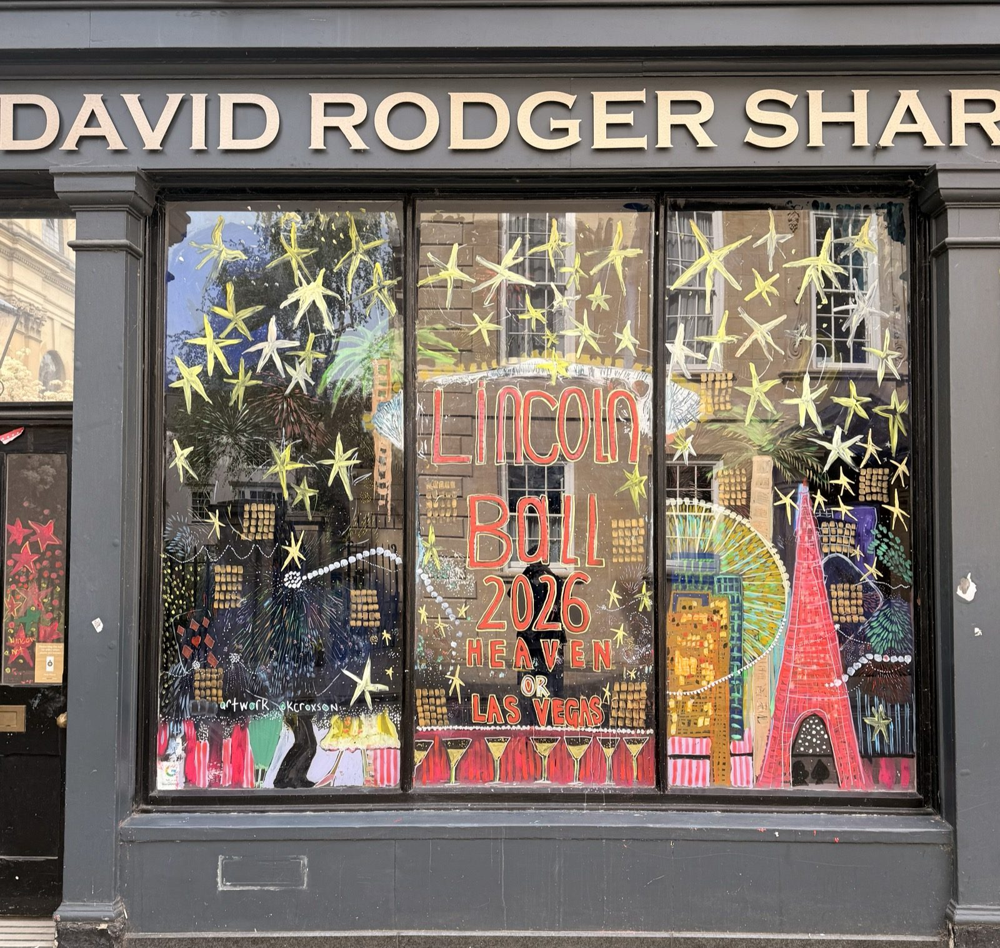
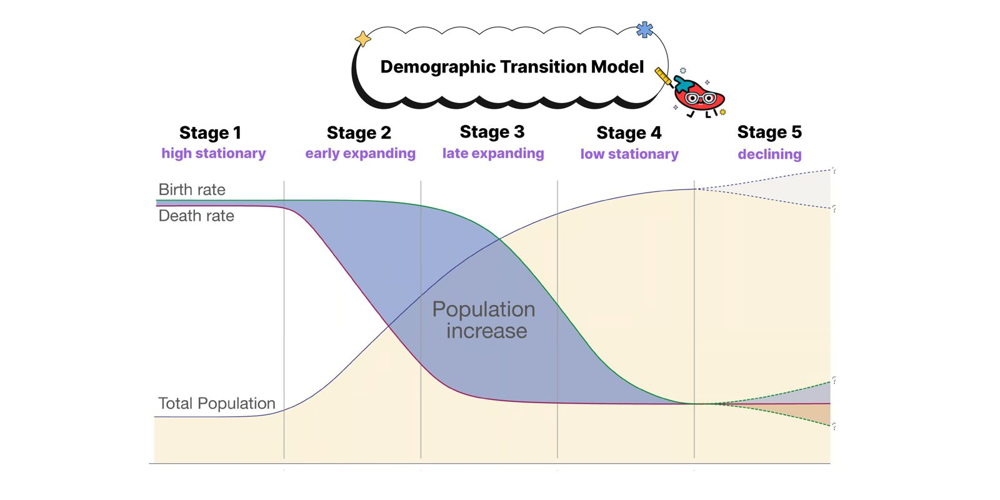
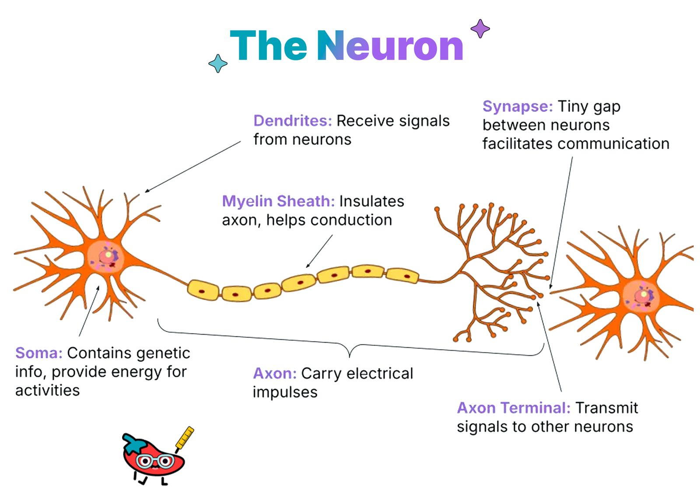
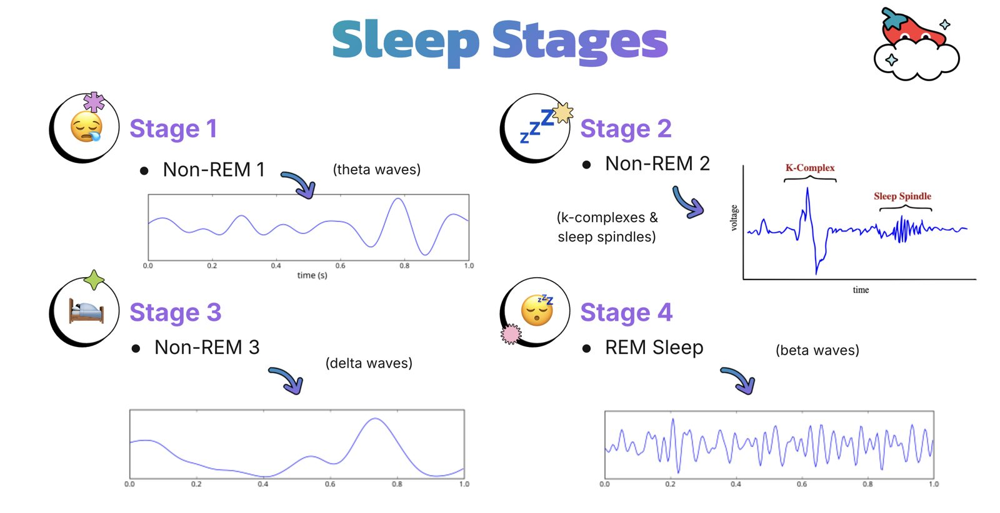
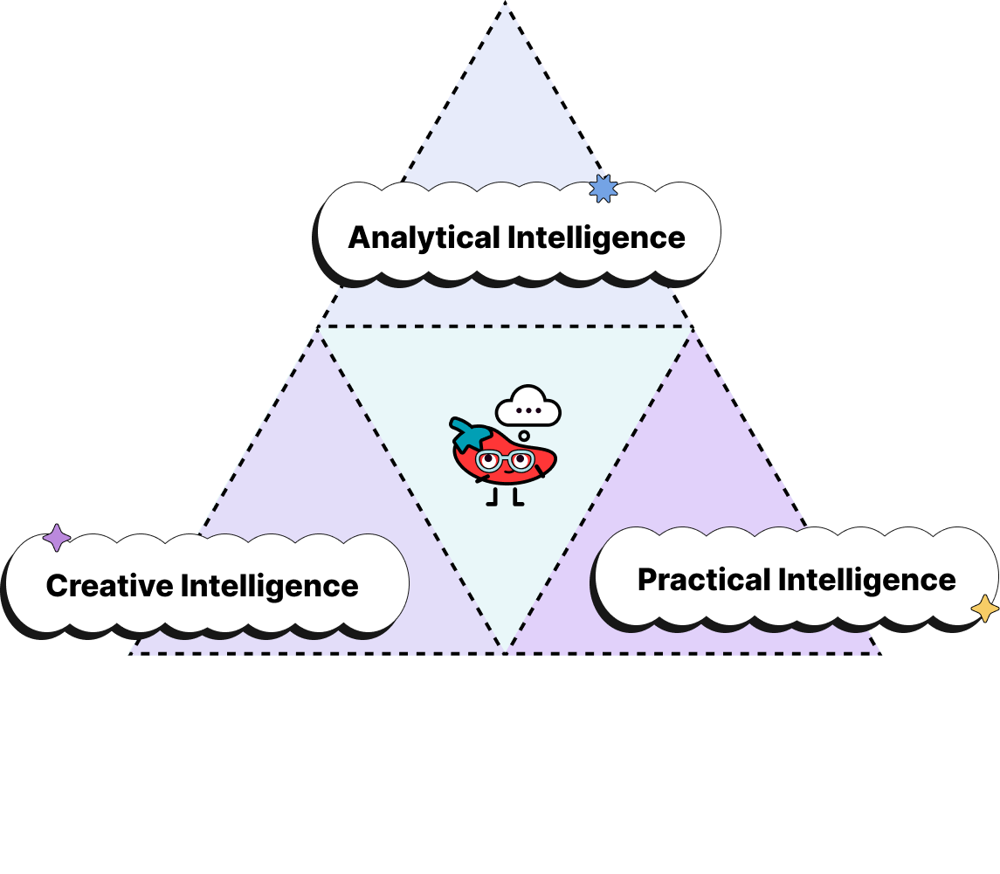
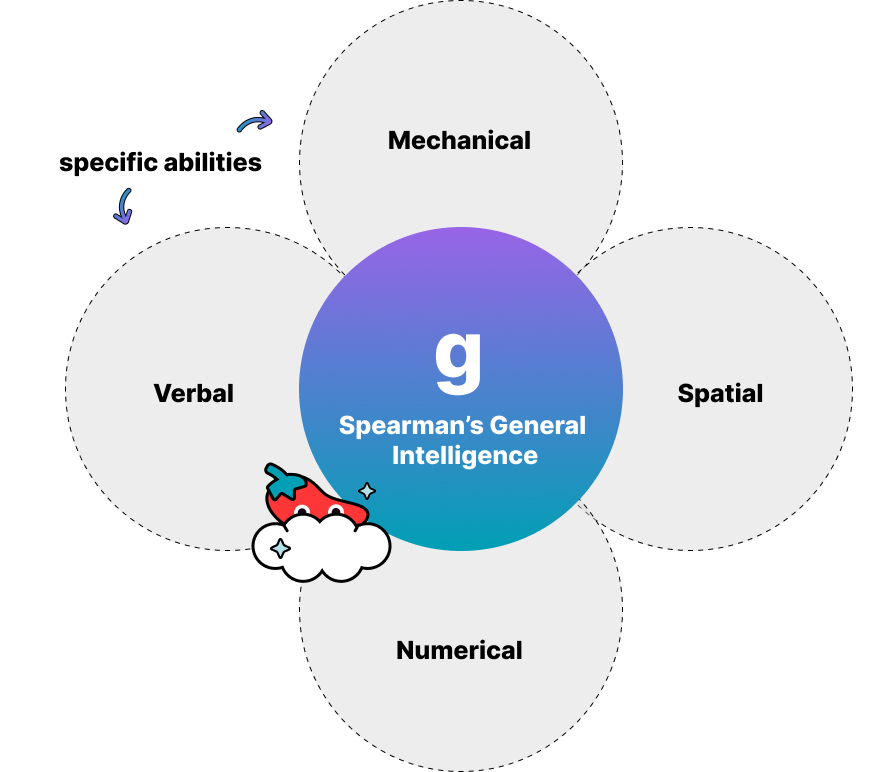
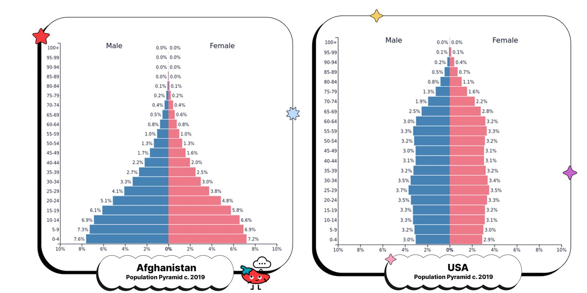
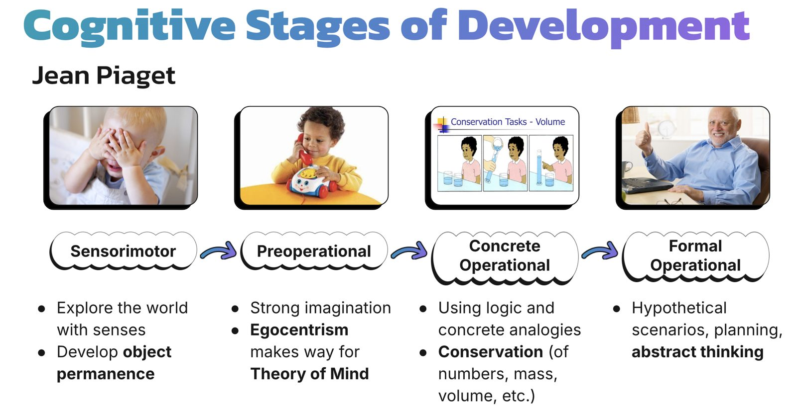
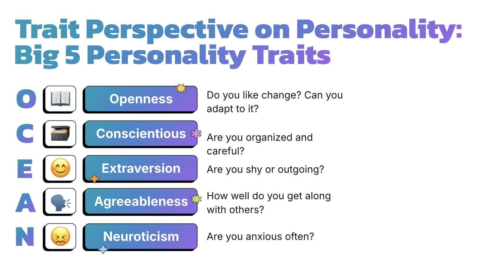

projects
The Oxford Student — Opinion
Edited and published articles for the Opinion section, commissioned pieces, managed a team of section editors, and worked at print lay-ins for each issue through my position as Deputy Editor, Opinion at The Oxford Student.
Q-Step I (Quantitative Research) Coursework Essay
Designed and executed a logistic regression analysis of British Election Study survey data (n=20,000+) in R to model voter alignment with Reform UK, cleaning raw survey data, engineering dummy/constructed variables, and building predictive visualizations (ggplot2, ggeffects), and applied cleavage-theory frameworks (Lipset & Rokkan's social cleavage model, the GAL-TAN dimension) to identify immigration attitudes and class perception as the strongest predictors of right-populist party support. Received a mark of 72 (First-Class).
The Turl Magazine
Led a team of 25, managed submissions, coordinated printing with local press and funding with Jesus College, and spearheaded 2-day InDesign lay-in through my position as Editor in Chief of the Trinity Term 2026 edition of the Turl Magazine.
Creative, Marketing & PR
Lincoln College Ball 2026 — Heaven or Las Vegas
As Head of Marketing on the Lincoln College Ball Committee, I rebuilt the Ball's marketing on my own after the previous marketing team resigned. I helped shape the marketing strategy and creative direction in committee meetings, then ran the campaign from theme reveal to final ticket push.
I designed the campaign around the "Heaven or Las Vegas" theme as a series of panoramic Instagram carousels. Each one splits into three slides that join up seamlessly on the grid. The posts revealed the headliner (Charlie Burg), the tribute acts, the casino and fairground entertainment, the dress code and the food and drink.
View the campaign slideshow on Instagram

The Turl Street mural, artwork by @kcroxson.
Lincoln College JCR — Access & Outreach
I'm one of two Access and Outreach Officers on Lincoln's JCR. I run the JCR's Instagram and support the college's access and outreach events. I helped produce the JCR's 2026 Alternative Prospectus, which is a student-written guide to life at Lincoln covering accommodation, food, welfare, societies and financial support.
As the JCR's International Students' Representative, I also wrote and designed a 19-page guide for incoming international students, covering arrival, visas, banking, phones, packing and settling in. Read the International Freshers' Guide 2026–27
Fiveable — Visual Content & Live Events
As Visual Content Manager, I created and maintained visual content for 40+ AP, SAT and ACT study guides, designing original diagrams, charts and infographics in Figma, Photoshop and Canva within Fiveable's brand guidelines. Before that, as Live Events Designer, I designed slide decks for the AP Human Geography Cram Finales, live virtual review events with 14,000+ total attendees.








Scroll sideways for more graphics.
B.R.A.I.N.S — Civics Unplugged Solvathon
I co-developed B.R.A.I.N.S (Budget for Responsible AI Integration in National Schools), a national framework for the ethical use of AI in schools, with three teammates, and designed its 23-slide pitch deck. It placed first of ~200 teams at the Civics Unplugged Fall 2024 Solvathon, and we presented it to the U.S. Department of Education's Office of Educational Technology.
Other Content & Campaign Work
Evan Low for Congress: I worked with the campaign's social media team to build online support, helped run in-office events, and reached ~500 voters through canvassing and phone-banking.
Notion: As Campus Leader at Oxford, I promote Notion to students and help build a startup culture on campus through events and partnerships.